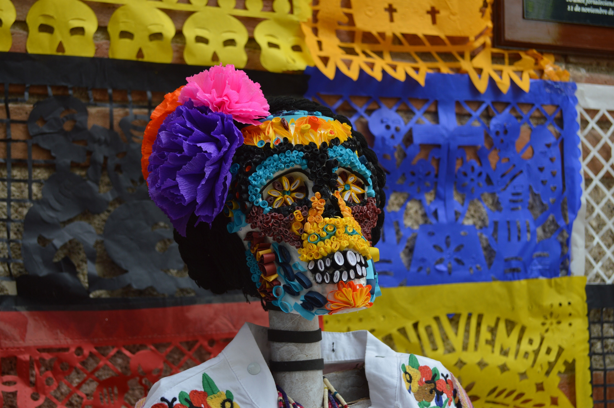
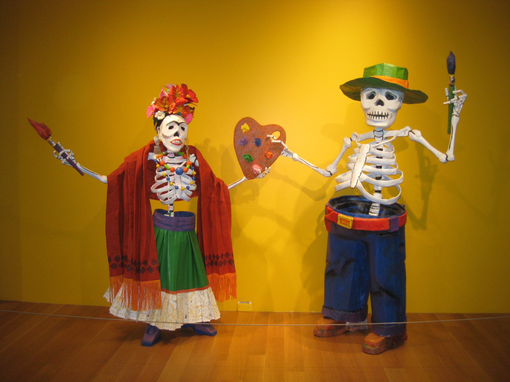
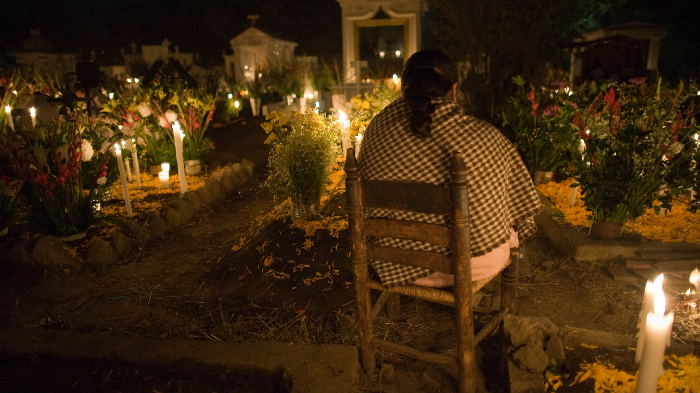
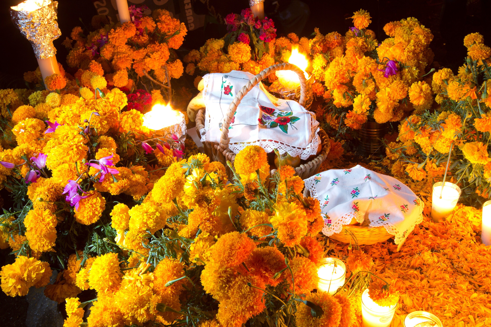
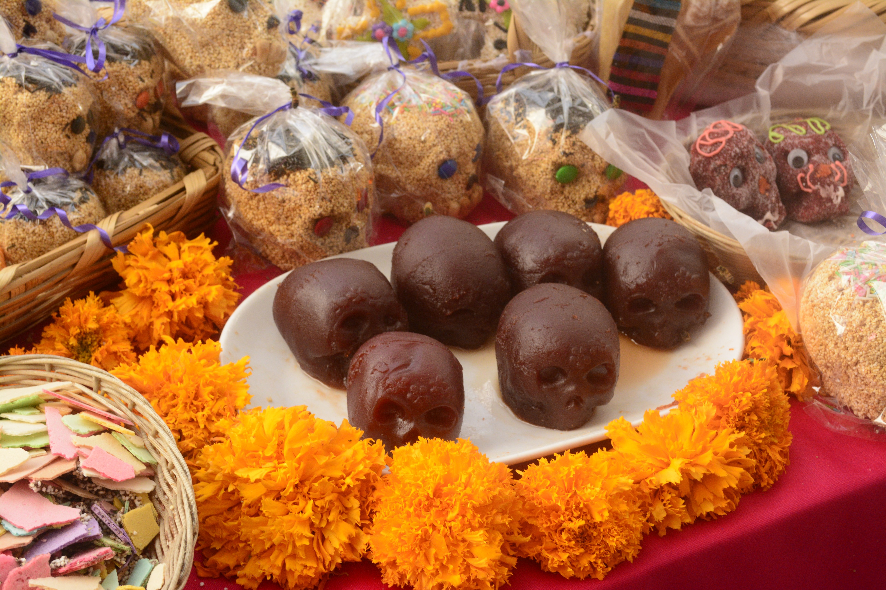
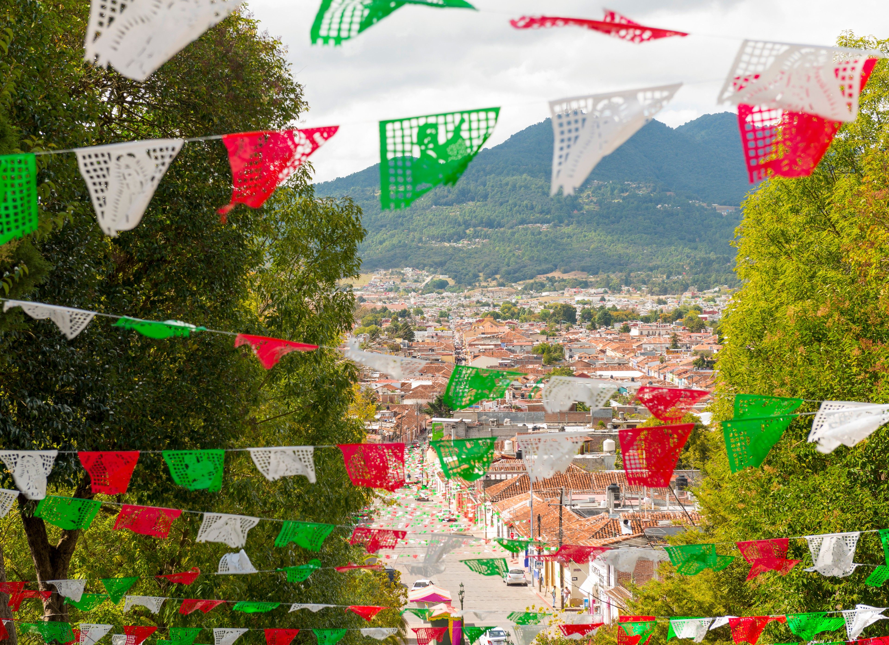
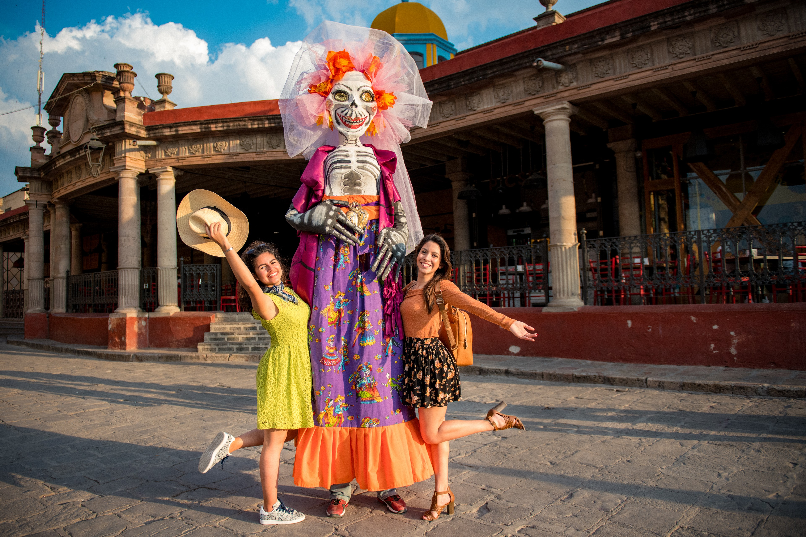

El Día de los Muertos es una tradición única que se celebra cada año principalmente el 1 y 2 de noviembre en todo México. Es un festival destinado a honrar a los antepasados muertos en la fecha en que se cree que sus almas regresan a la Tierra. Como México es un país grande y diverso, las tradiciones son tan variadas como el país en sí, pero hay tradiciones únicas que se han convertido en una de las más importantes y relevantes de México. Asi, la UNESCO declaró en el año de 2003, a la festividad indígena del día de muertos, Obra maestra del patrimonio cultural de la humanidad. Esta festividad representa uno de los ejemplos más relevantes del patrimonio vivo de México y del mundo, así como una de las expresiones culturales más antiguas y de mayor plenitud de los grupos indígenas que actualmente habitan en nuestro país.
Al contrario de lo que a menudo se retrata en la cultura popular, el Día de los Muertos no es la versión mexicana de Halloween. A pesar de que caen en la misma época del año y tienen similitudes, los dos son días festivos diferentes con orígenes separados y tradiciones únicas. Halloween tiene su origen en el festival de la cosecha celta de Samhain, mientras que el Día de los Muertos tiene sus raíces en las antiguas tradiciones religiosas de la población indígena de Mesoamérica. Halloween, como se practica hoy en día, implica truco o trato, usar disfraces y decorar calabazas. Las tradiciones del Día de los Muertos no incluyen ninguna de esas cosas. En Halloween, los espíritus son vistos como algo aterrador, o algo para evitar. El Día de los Muertos se enfoca en recibir las almas de los parientes muertos con alegría y hospitalidad.

Como se mencionó anteriormente, las raíces del Día de los Muertos son profundas en la historia de México y se remontan a los días anteriores a la conquista española. Las civilizaciones precolombinas tuvieron una variedad de celebraciones destinadas a honrar a los muertos.. Sin embargo, muchas de las tradiciones que conocemos hoy provienen de las prácticas religiosas de los aztecas, que creían que existían diferentes vidas posteriores dependiendo de cómo muriera la gente. Uno de ellos es Mictlán, el destino final para quienes murieron por causas naturales, y gobernados por la diosa Mictecacíhuatl, a menudo representada por una calavera. Los aztecas creían que para llegar a Mictlán, las almas tenían que completar un arduo viaje. Para ayudar al difunto a lo largo de este viaje, los aztecas hacían ofrendas de objetos útiles en los sitios de entierro de sus familiares. Varias fiestas aztecas involucraban rituales para honrar a los fallecidos, incluyendo decorar tocones de árboles y colocar ofrendas para parientes muertos. Estas tradiciones sientan un precedente para los Ofrendas, o altares del Día de los Muertos colocados hoy por las familias mexicanas. Después de la colonización, estas tradiciones se cristianizaron y se incorporaron a las fiestas católicas del Día de Todos los Santos y del Día de Todas las Almas, produciendo un sincretismo único de tradiciones. Las tradiciones se trasladaron del verano al 1 y 2 de noviembre para coincidir con estos dos días.

En los días previos a las vacaciones, es costumbre construir un santuario para honrar a los familiares fallecidos. Estos santuarios, conocidos en español como "Ofrendas", son brillantes, coloridos y ornamentados. Están adornados en naranja y morado, los colores tradicionales de las fiestas, y decorados con flores, incluidas las maravillas, y artesanías de papel decoradas, incluido el tradicional "papel picado". Colocados encima de estos altares hay fotografías de los fallecidos , objetos que eran preciosos para ellos. y comidas que disfrutaron en la vida. Estos se sientan junto a calaveras de azúcar, velas, el tradicional Pan de Muertos, cruces y estatuas e íconos de Jesús y los Santos. Los mexicanos seculares y no católicos a menudo evitarán colocar esta iconografía religiosa en sus Ofrendas. Durante las vacaciones, las Ofrendas no solo se colocan en hogares, sino también en escuelas, oficinas y plazas públicas. En ciudades de todo México, las Ofrendas públicas se convierten en un espectáculo en sí mismo, atrayendo a decenas de personas para ver estos magníficos altares a gran escala ubicados a la vista del público. A menudo están hechos por artistas conocidos, adoptan un tema anual y están destinados a honrar a figuras importantes de la historia y la cultura mexicana.

Si bien muchos esperarían que el Día de los Muertos fuera un solemne día conmemorativo, en realidad es una ocasión alegre, pensada como una celebración de la vida. En lugar de que todo sea oscuro y sombrío, como se asocia comúnmente con los rituales de duelo, la fiesta es brillante y colorida, con decoraciones que llenan casi todos los hogares y espacios públicos del país. Es común tener comidas de celebración con la familia, así como fiestas callejeras con música y baile. En muchos pueblos, hay procesiones de celebración con máscaras, títeres y trajes coloridos.
Dado que el Día de los Muertos es una festividad, se ha vuelto común interponer el humor clásico mexicano para agregar a la alegría de la ocasión. El arte del Día de los Muertos a menudo presenta esqueletos bebiendo, bailando y celebrando, y estos esqueletos a menudo se representan en situaciones humorísticas. Desde el siglo XIX, las vacaciones se han convertido en sinónimo del arte del dibujante mexicano José Guadalupe Posada, quien creó extravagantes obras de arte y personajes basados en esqueletos , incluida la icónica La Catrina. Otra tradición que refleja esto es la costumbre de escribir "calaveritas", que son poemas cortos y humorísticos sobre una persona viva y cómo murieron. A menudo se comparten entre amigos y familiares, o se publican en revistas y periódicos para satirizar a famosos y políticos.
Una parte central de las vacaciones implica ir al cementerio y pasar tiempo en las tumbas de los seres queridos. En preparación para el Día de Muertos, las familias limpiarán y lavarán las tumbas de sus difuntos, y las decorarán con velas y flores como las maravillas. Traerán ofrendas de comida que el difunto disfrutó y objetos que fueron significativos para ellos en la vida. En el caso de los niños, los juguetes serán llevados a la tumba. En muchas partes del país, las familias compartirán una comida junto a las tumbas de sus familiares, mientras comparten historias y recuerdos sobre los seres queridos que han perdido.
La Flor de Cempasuchil, también conocida como caléndula mexicana, es una flor de color naranja brillante que crece alrededor de México durante el otoño. Se ha convertido en un símbolo importante del Día de los Muertos. Alrededor de la época de las vacaciones, se ve en todas partes, desde Ofrendas, hasta edificios públicos e incluso parques. La razón de esto no es solo el hecho de que es una flor de temporada, sino también debido al olor particularmente fuerte de la flor. Se cree que este olor, según el folklore mexicano, atrae espíritus. Por esta razón, tradicionalmente se coloca en Ofrendas para atraer las almas de los fallecidos a los hogares de sus parientes vivos. La flor también está fuertemente asociada con el sol y el renacimiento, dado su color naranja.

Pan de muerto: Nos fascina su forma, sabor (azucarado en la primer capa) y consistencia suavecita. Quizá en algún momento hayas percibido que su figura podría aludir a una calavera, o no. Pero, lo cierto es que en la cultura popular es un elemento sumamente importante y ya que es un pan de temporada, en esta época los panaderos empiezan a hacerlo y los mexicanos lo disfrutan inmensamente.
El INAH (Instituto Nacional de Antropología e Historia) afirma que el origen del pan de muerto es colonial, aunque inspirado en prácticas rituales prehispánicas.
Simbología
El pan más tradicional hace una forma circular que simboliza el ciclo de la vida y la muerte. El círculo al centro es la representación de un cráneo; las cuatro canelas son una alusión a los huesos y a las lágrimas de los que lamentan al difunto, y también, colocadas como cruz, simbolizan los 4 puntos cardinales que a su vez están dedicados a distintos dioses: Quetzalcóatl, Tláloc, Xipe Tútec y Tezcatlipoc. Por su parte, el sabor refiere al recuerdo de los fallecidos.
El ritual del Día de Muertos está colmado de simbolismo, y de una relación muy íntima, respetuosa, aunque paradójicamente irónica que el mexicano ha llevado por la muerte desde los antiguos mesoamericanos.
Otro elemento básico es la calavera de azúcar. Una escultura de azúcar decorada de forma adornada con forma de calavera que puede ser una hermosa decoración o un dulce regalo. Vienen en variedades comestibles y no comestibles. Las calaveras de azúcar más decorativas a menudo contienen un espacio para escribir el nombre de un ser querido fallecido para colocarlo encima de la Ofrenda. La versión comestible es más simple y generalmente está hecha de un tipo de azúcar más suave. Los cráneos comestibles también se pueden encontrar en una versión de chocolate, y las panaderías y confiterías de todo el país hacen pasteles en forma de calaveras, galletas e incluso gomitas para las vacaciones.
México es un país muy grande y diverso, y, como tal, no es un lugar homogéneo. Por lo tanto, las celebraciones del Día de los Muertos tienden a variar de un lugar a otro. No es raro que diferentes ciudades tengan sus propias tradiciones únicas. Mixquic, a las afueras de la Ciudad de México, decora la ciudad con cadenas de papel y estrellas para guiar a los espíritus, mientras que en Pátzcuaro, Michoacán, la gente viaja al cementerio en botes iluminados por velas a través del lago por la noche. En la península de Yucatán, es costumbre tener una comida festiva en la que el plato principal es pib, una cazuela a base de maíz similar al tamal.
Al pasar por la escena de apertura en la película más reciente de James Bond SPECTER, uno asumiría que el desfile del Día de los Muertos en la Ciudad de México es un gran problema. Sin embargo, el desfile y la fiesta callejera que se vieron en la película fueron en realidad completamente ficticios e ideados por los escritores de la película. Dado el interés que esto generó de los turistas, el gobierno de la Ciudad de México creó su propia versión del desfile inspirado en la película hace unos años. El desfile se hizo extremadamente popular, pero no fue sin sus críticos quienes reprendieron la mayor comercialización de la fiesta.
